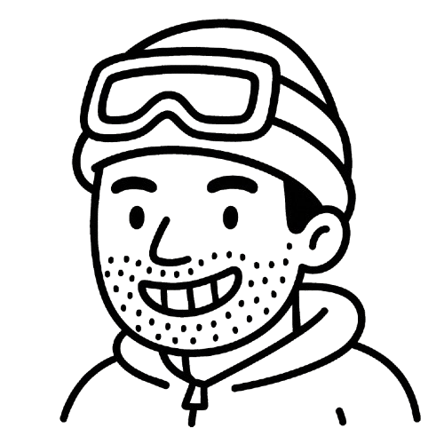

Salut, je suis Clément et j’accompagne les équipes R&D dans la validation terrain de leurs produits grâce à des protocoles d’essais, des tests utilisateurs et une analyse exploitable des retours terrain.


Concevoir une méthodologie rigoureuse garantissant un test fiable adapté aux objectifs définis.
Comprendre les attentes du projet en échangeant avec les parties prenantes pour définir les objectifs et les contraintes du test.
Sélectionner un panel représentatif d’utilisateurs afin d’assurer la pertinence des données recueillies.
Exploiter des outils d’analyse statistique pour interpréter les résultats des tests afin d’en extraire des conclusions.
Synthétiser les analyses et les données interprétées dans un format clair et exploitable pour aider à la prise de décision.
Formaliser les conclusions et recommandations dans un rapport structuré afin d'assurer la pérennité des apprentissages liés au test.
Mettre en œuvre le protocole avec les testeurs dans des conditions réelles afin de collecter les données.
Comprendre les attentes du projet en échangeant avec les parties prenantes pour définir les objectifs et les contraintes du test.
Concevoir une méthodologie rigoureuse garantissant un test fiable adapté aux objectifs.
Sélectionner un panel représentatif d’utilisateurs afin d’assurer la pertinence des données recueillies.
Mettre en œuvre le protocole avec les testeurs dans des conditions réelles afin de collecter les données.
Exploiter des outils d’analyse statistique pour interpréter les résultats des tests, et comprendre les retours utilisateurs afin d’en extraire des conclusions.
Synthétiser les analyses et les insights dans un format clair et exploitable pour aider à la prise de décision par les équipes de conception.
Formaliser les conclusions et recommandations dans un rapport structuré pour assurer la pérennité des apprentissages liés au test.
Reproduire un essayage magasin afin de collecter des données précises sur le taillant, le confort, et les sensations liées au produit.
Voir un exemple concret ➜Isoler une fonction d’un produit via un protocole spécifique pour comparer ses performances à une référence.
Voir un exemple concret ➜Recréer l’usage typique du produit selon le brief initial de conception, afin d’évaluer ses performances et son comportement en conditions réelles.
Voir un exemple concret ➜Établir un lien entre les résultats d’usage terrain et les mesures en laboratoire.
Voir un exemple concret ➜Une marque me contacte pour évaluer un prototype d'entrée
de gamme en cours de développement.
L’enjeu : valider que la nouvelle version offre
une meilleure expérience chaussante que le modèle actuellement vendu en magasin.
L’équipe projet souhaite savoir :
- si
le prototype offre un meilleur confort global
- s’il génère des inconforts importants non identifiés
jusqu’ici
- si le taillant (longueur, largeur, maintien talon…) est cohérent
- et enfin,
si des modifications sont nécessaires avant de lancer l’industrialisation

L’équipe projet souhaite savoir :
- si
le prototype offre un meilleur confort global
- s’il génère des inconforts importants non identifiés
jusqu’ici
- si le taillant (longueur, largeur, maintien talon…) est cohérent
- et enfin,
si des modifications sont nécessaires avant de lancer l’industrialisation
Pour obtenir des données fiables, j’ai
recruté 15 testeurs, tous dans la pointure correspondant au prototype. Ces testeurs ont
testé le prototype et une paire de référence, en l’occurence la paire actuellement en
rayon.
Chaque session dure 30 minutes, en individuel, et suit un protocole
strict :
1) Accueil + explication transparente du déroulé
2) Relevé des mesures des pieds dans des
zones clés
3) Test à l’aveugle (lunettes obstruant la vue pour limiter les biais esthétiques) et dans
un ordre randomisé
5) 5 minutes de marche + passage sur un module de test
6) Réponse à un
questionnaire précis sur : facilité d’enfilage & de serrage / confort & inconforts / taillant
(longueur, largeur avant-pied, volume, maintien talon…) projection &
désirabilité.
Ce protocole permet d’obtenir une comparaison objective et reproductible,
centrée sur le ressenti chaussant réel.
Quelques insights forts issus du test :
Confort :
→ Pas de
différence significative en confort global
→ Mais légère tendance en faveur du modèle actuel
Inconforts :
→ 64 % des testeuses
citent au moins 1 inconfort sur le prototype
Les plus fréquents :
1) Frottement au
talon (touche 21% des testeuses à une intensité moyenne de 3/5)
2) Point de
pression haut du col (touche 21% des testeuses à une intensité moy de 2.7/5)
3)
Point de pression bas du talon (touche 14% des testeuses à une intensité moy
de 3/5)
Fit & maintien :
→ Taillant global
équivalent entre les deux modèles
→ Le taillant est perçu comme trop serré à
l’avant-pied (largeur meta / volume toe box) pour les deux paires (cela touche environ la moitié
des testeuses).
→ Un tiers des testeuses jugent également la chaussure "légèrement trop
courte" ou "trop courte"
→ Un léger décollement du talon est présent lors de
la marche pour 43 % des testeuses
-modifie.png)
Quelques insights forts issus du test :
Confort :
→ Pas de
différence significative en confort global
→ Mais légère tendance en faveur du modèle actuel
Inconforts :
→ 64 % des testeuses
citent au moins 1 inconfort sur le prototype
Les plus fréquents :
1) Frottement au
talon (touche 21% des testeuses à une intensité moyenne de 3/5)
2) Point de
pression haut du col (touche 21% des testeuses à une intensité moy de 2.7/5)
3)
Point de pression bas du talon (touche 14% des testeuses à une intensité moy
de 3/5)
Fit & maintien
:
→ Taillant global équivalent entre les deux modèles
→ Le taillant est perçu
comme trop serré à l’avant pied (largeur meta / Volume toe box) pour les deux paires
(cela touche environ la moitié des testeuses).
→ Un tiers des testeuses jugent également la chaussure
"légèrement trop courte" ou "trop courte"
→ Décollement talon
léger présent lors de la marche chez 43 % des testeuses
Grâce à ce test, la marque a pu :
- Identifier clairement
les zones à retravailler (talon / col)
-Ajuster le patronage de la paire afin de donner
plus d’espace avant-pied
-Augmenter la souplesse du col pour limiter les gênes
-
Décider, sur des bases objectives, que la paire ne pouvait pas être validée en
l’état
-Et demander la fabrication d’un nouveau prototype intégrant les modifications,
afin de mesurer précisément l’impact de ces corrections lors d’un second test.
En résumé : ils ont sécurisé leur prise de décision, évité un lancement
fragile, et obtenu une feuille de route claire pour la suite du développement.
Une marque me contacte pour
évaluer le niveau de maintien d'un prototype de chaussure de randonnée tige basse en
cours de conception
L’enjeu : valider que le nouveau produit offre un niveau de
maintien suffisant et cohérent pour sa gamme et pouvoir le revendiquer.
L’équipe
projet souhaite savoir :
- Si le prototype offre un meilleur maintien que la chaussure
actuellement en rayon
- Comment il se positionne face à deux modèles
concurrents réputés pour leur maintien
- Et, en fonction des résultats, quelles zones
ajuster en priorité (talon, quartier, laçage etc.) avant la suite du développement.

Chaque
paire a été masquée et testée dans un ordre randomisé. Les différentes
paires ont toutes été testées sur le même parcours, composé principalement de sentiers de randonnée avec
certaines parties irrégulières (rochers, racines, herbe) et de pentes (montées, descentes,
dévers) :
Montée et descente : 2 x en marchant + 1 x en trottinant (pente de 20 à 30° sur
environ 20m)

Marche en dévers :
2 allers-retours sur 15m

Slalom :
≈ 8 changements rapides de direction. 2 allers-retours

Après
cette boucle, pour chacune des 4 paires testées, les testeurs ont évalué les critères suivants :
- L'appréciation globale
- Les inconforts générés par la chaussure
- Le maintien au global de
la chaussure
- Le maintien longitudinal et latéral
- Le maintien par zone du pied
(avant-pied, talon etc.)
- L'espace disponible pour la boite à orteils
Quelques résultats clés issus
du test :
Appréciation globale :
→ Une paire concurrente
s’est significativement démarquée
→ Mais le prototype n'était pas significativement différent des
deux autres paires
Inconforts :
→
Les testeurs ont surtout relevé des inconforts au niveau de l’avant-pied, dus à une boîte à orteils
un peu trop étroite, ce qui a réduit l’espace disponible et causé des points de
pression.
Maintien (global et par zone) :
Le
maintien global de la chaussure était légèrement inférieur aux paires concurrentes, mais sur les dévers, le
prototype a montré une bonne performance latérale. En revanche, on a noté légèrement plus de décollement du
talon que sur les autres paires, principalement en montée
Grâce à ce test, la marque a pu :
-
Ajuster le patronage de la paire afin de donner plus d’espace avant-pied, dans le but de
limiter les inconforts et donc améliorer l'expérience globale.
- Augmenter la densité de la
mousse talon pour limiter les décollements à l'usage
- Et demander la fabrication d’un
nouveau prototype intégrant les modifications, afin de mesurer précisément l’impact de ces
corrections lors d’une nouvelle itération de test.
En
résumé : ils ont objectivé le niveau de maintien de leur prototype, ciblé les corrections prioritaires et
lancé la suite du développement sur des bases solides.
Une
marque de camping souhaite lancer un nouveau concept de tente familiale 4 personnes. L’équipe souhaite donc
vérifier que ce concept apporte un vrai gain d’usage par rapport a un de leurs modèles déjà présent sur le
marché.
L’enjeu : valider le potentiel du concept en conditions
réelles de camping, et identifier les axes d’amélioration pour la suite du
développement.
L’équipe projet souhaite savoir si :
- le système de montage / démontage du concept est réellement
plus simple et plus rapide que celui de leur tente “classique” à arceaux
- l’habitabilité (chambres, séjour, hauteur) répond aux usages d’une famille
- la
ventilation, l’accessoirisation, la lumière et l’obscurité permettent de bien vivre dans la
tente, de jour comme de nuit
- les familles se projettent dans l’achat de
ce nouveau concept, et quel prix elles seraient prête à débourser.
- une préférence se
dégage entre les deux prototypes (qui diffèrent par la taille du séjour)

7 familles pratiquant le camping régulièrement ont été recrutées via une plateforme de
co-création, avec des compositions allant de 3 à 4 personnes. Le test à été réalisé dans un camping 3★, et
chaque famille était conviée sur place 1 jour et 1 nuit.
Chaque jour, 2
familles étaient présentes en simultané pour réaliser le test :
Montage : du prototype et d’une tente de référence de la gamme actuelle (dans un ordre
aléatoire)

Soirée et nuit : utilisation libre de la nouvelle tente (repas, jeux, couchage,
rangements etc.)

Démontage : du prototype et d’une tente de référence (dans un ordre aléatoire)

Les familles étaient donc invités à répondre à un questionnaire dans la foulée du montage, puis à un
deuxième le lendemain à l'issue de l'expérience globale.
- L'appréciation globale
- Les inconforts générés par la chaussure
- Le maintien au global de
la chaussure
- Le maintien longitudinal et latéral
- Le maintien par zone du pied
(avant-pied, talon etc.)
- L'espace disponible pour la boite à orteils
Quelques résultats clés issus du test :
Un montage / démontage nettement
simplifié :
→ Les deux versions de la nouvelle tente se montent 1,5 à 2x plus
vite que la tente de référence.
→ Point de vigilance : la notice doit être
clarifiée (importance de la tension, ordre des étapes, repères sur le produit) pour
exploiter pleinement le potentiel du nouveau concept.
Une version
“grand séjour” qui fait l’unanimité :
→ Hauteur sous plafond, grande
porte, luminosité maîtrisée et double chambre séparée : cette version est jugée
spacieuse, confortable et bien pensée.
→ Les
familles trouvent le séjour et les chambres plus adaptés que ceux de la tente de référence, et se
projettent très facilement pour plusieurs nuits.
→ Quelques pistes d’optimisation ressortent : accessoirisation à densifier (plus de
poches dans certaines zones) et ventilation à encore mieux expliquer / valoriser.
Une version compact à ajuster :
→ Côté montage /
démontage, la version compacte est très bien notée également.
→ En revanche, les familles jugent :
le séjour trop petit et un peu bas, la chambre trop juste pour 4
personnes,
Satisfaction globale & prix perçu :
→
La version “grand séjour” offre une expérience globalement très postive, elle obtient une
note de satisfaction moyenne proche de 4,5/5, et l’ensemble des familles la recommanderaient à un
proche.
→ La version compacte est, elle, notée autour de 3,7/5 : jugée intéressante mais
perfectible.
Quelques résultats clés issus du test :
Un montage / démontage nettement
plus simples :
→ Les deux versions de la nouvelle tente se montent 1,5 à 2 fois plus vite
que la tente de référence.
→ Point de vigilance : la notice doit être clarifiée (sens de tension, ordre
des étapes, repères sur les sardines) pour exploiter pleinement le potentiel du nouveau
concept.
Une version “grand séjour” qui fait l’unanimité
:
→ Hauteur sous plafond, grande porte, luminosité maîtrisée et double
chambre séparée : cette version est jugée spacieuse, confortable et bien pensée.
→ Les familles
trouvent le séjour et les chambres plus adaptés que ceux de la tente de référence, et se projettent très
facilement à plusieurs nuits.
→ Quelques pistes d’optimisation ressortent : accessoirisation à
densifier (plus de poches dans certaines zones) et ventilation à encore mieux expliquer /
valoriser.
Une version compact à ajuster :
→
Côté montage / démontage, la version compacte est très bien notée également.
→ En revanche,
les familles jugent :le séjour trop petit et un peu bas, la chambre trop juste pour 4
personnes,
Satisfaction globale & prix perçu :
→
La version “grand séjour” offre une expéreince globalement très postive, elle obtient une note de
satisfaction moyenne proche de 4,5/5, et l’ensemble des familles la recommanderaient à un proche.
→ La
version compacte est elle notée autour de 3,7/5 : jugée intéressante mais perfectible, avec un prix perçu
cohérent à condition d’améliorer l’habitabilité et l’occultation.
En confrontant le
protoptype à la réalité du terrain, la marque a pu :
- Valider le concept permettant un
système de montage / démontage simplifié.
- Prioriser la version ayant un séjour plus
spacieux, afin de rendre l’expérience réellement vivable pour une famille.
- Repenser
la notice et les repères visuels pour rendre le montage fluide dès la première utilisation.
-
Améliorer l’accessoirisation (nombre et position des poches, crochets,
rangements)
En résumé : ils ont
confronté leur future tente à de vraies familles, sécurisé leurs choix de conception majeurs, et obtenu une
feuille de route claire pour transformer un bon concept en produit fini prêt à camper.
Une marque de chaussures de randonnée dispose de tests laboratoire pour mesurer et simuler l’accroche de ses
semelles. Mais une question restait sans réponse :
Est-ce que les indices mesurés en labo reflètent vraiment ce que les randonneurs ressentent sur le terrain ?
Ils m’ont donc sollicité pour mettre en place un test terrain et vérifier la corrélation entre leurs données
labo et le ressenti réel d’accroche.
L’équipe projet souhaitait :
- Comparer l’accroche réelle de 8 semelles ayant
différentes constructions (pattern de crampons, hauteurs crampons, matériaux...) montées sur la
même tige.
- Confronter cette hiérarchie terrain aux
résultats en laboratoire.
- Identifier les éléments de design (forme / espacement
des crampons etc.) qui expliquent les écarts et faire évoluer leurs tests labo et simulations
numériques.

Une quarantaine de testeurs ont pris part au test, répartis sur plusieurs sessions. Ces
derniers devaient réaliser un aller-retour sur terrain boueux, en tirant une charge, pour chacune des 8
semelles. Aléatoirement une semelle était testée une seconde fois par le testeur.
Terrain : du prototype et d’une tente de référence de la gamme actuelle (dans un ordre
aléatoire)
Charge : utilisation libre de la nouvelle tente (repas, jeux, couchage, rangements
etc.)

Démontage : du prototype et d’une tente de référence (dans un ordre aléatoire)
Terrain : une prairie transformée en piste boueuse, avec une vingtaine de mètres à
parcourir en aller-retour.

Charge : un traîneau chargé à 40 % du poids du corps, pour augmenter la pression au sol
et obliger le testeur à appuyer au sol.
Après chaque passage, les testeurs notent le niveau d’accroche perçue et décrivent les
sensations (glisse, bourrage de boue, stabilité en appui, etc.).
- L'appréciation globale
- Les inconforts générés par la chaussure
- Le maintien au global de
la chaussure
- Le maintien longitudinal et latéral
- Le maintien par zone du pied
(avant-pied, talon etc.)
- L'espace disponible pour la boite à orteils
Quelques résultats clés issus du test :
Un montage / démontage nettement
simplifié :
→ Les deux versions de la nouvelle tente se montent 1,5 à 2x plus
vite que la tente de référence.
→ Point de vigilance : la notice doit être
clarifiée (importance de la tension, ordre des étapes, repères sur le produit) pour
exploiter pleinement le potentiel du nouveau concept.
Une version
“grand séjour” qui fait l’unanimité :
→ Hauteur sous plafond, grande
porte, luminosité maîtrisée et double chambre séparée : cette version est jugée
spacieuse, confortable et bien pensée.
→ Les
familles trouvent le séjour et les chambres plus adaptés que ceux de la tente de référence, et se
projettent très facilement pour plusieurs nuits.
→ Quelques pistes d’optimisation ressortent : accessoirisation à densifier (plus de
poches dans certaines zones) et ventilation à encore mieux expliquer / valoriser.
Une version compact à ajuster :
→ Côté montage /
démontage, la version compacte est très bien notée également.
→ En revanche, les familles jugent :
le séjour trop petit et un peu bas, la chambre trop juste pour 4
personnes,
Satisfaction globale & prix perçu :
→
La version “grand séjour” offre une expérience globalement très postive, elle obtient une
note de satisfaction moyenne proche de 4,5/5, et l’ensemble des familles la recommanderaient à un
proche.
→ La version compacte est elle notée autour de 3,7/5 : jugée intéressante mais
perfectible.
Quelques résultats clés issus du test :
Un montage / démontage nettement
plus simples :
→ Les deux versions de la nouvelle tente se montent 1,5 à 2 fois plus vite
que la tente de référence.
→ Point de vigilance : la notice doit être clarifiée (sens de tension, ordre
des étapes, repères sur les sardines) pour exploiter pleinement le potentiel du nouveau
concept.
Une version “grand séjour” qui fait l’unanimité
:
→ Hauteur sous plafond, grande porte, luminosité maîtrisée et double
chambre séparée : cette version est jugée spacieuse, confortable et bien pensée.
→ Les familles
trouvent le séjour et les chambres plus adaptés que ceux de la tente de référence, et se projettent très
facilement à plusieurs nuits.
→ Quelques pistes d’optimisation ressortent : accessoirisation à
densifier (plus de poches dans certaines zones) et ventilation à encore mieux expliquer /
valoriser.
Une version compact à ajuster :
→
Côté montage / démontage, la version compacte est très bien notée également.
→ En revanche,
les familles jugent :le séjour trop petit et un peu bas, la chambre trop juste pour 4
personnes,
Satisfaction globale & prix perçu :
→
La version “grand séjour” offre une expéreince globalement très postive, elle obtient une note de
satisfaction moyenne proche de 4,5/5, et l’ensemble des familles la recommanderaient à un proche.
→ La
version compacte est elle notée autour de 3,7/5 : jugée intéressante mais perfectible, avec un prix perçu
cohérent à condition d’améliorer l’habitabilité et l’occultation.
Grâce à ce test terrain en conditions boueuses, la marque a pu :
- Établir une hiérarchie
claire entre les différentes solutions techniques
- Associer à chaque solution un
niveau de performance mesuré en termes d’accroche
- Vérifier la cohérence
entre les résultats laboratoire et la réalité du terrain
- Alimenter leurs modèles
de simulation numérique avec des données terrain fiables
En résumé : la collaboration avec un ingénieur essai
terrain leur a permis d'obtenir des données clés en main afin de mieux comprendre l'accroche et la
faire progresser sur l'ensemble de leur gamme de chaussures.
Mon activité en tant qu’Ingénieur Essai Terrain freelance me permet de renforcer continuellement mes compétences en me confrontant à des problématiques diverses et à une grande variété de produits. Chaque mission est une occasion d’approfondir mes connaissances et de perfectionner mes méthodes de travail. Grâce à cette expérience accumulée, je peux proposer des services adaptés et précis, en offrant des solutions optimisées à mes clients.


Au sein de Quechua, plus particulièrement du pôle conception Mountain Hiking, j’ai développé mon véritable attrait pour la conception de produits sportifs Outdoor. En réalisant des tests variés (chaussures, textiles, produits innovants), j’ai acquis des compétences clés : définition de protocoles, recrutement, gestion terrain, collecte et analyse de données etc. Cette expérience a également affiné ma capacité à vulgariser les résultats pour guider les équipes de conception, posant ainsi les bases de mes capacités actuelles.
Spécialité Conception de Produits et de Services.
Ce master, spécialisé en conception de produits et services, m’a permis de maîtriser les bases essentielles de mon activité actuelle. J’y ai appris à concevoir des protocoles de tests produits, organiser des évaluations terrain, recueillir des données précises, puis les analyser pour orienter les décisions. Ces compétences, renforcées par l’expertise d’intervenants du secteur, sont aujourd’hui au cœur de mon activité d’Ingénieur Essai Terrain.


Depuis mon plus jeune âge, le sport a toujours occupé une place centrale dans
ma vie. Cela fait plus de dix ans que je pratique l’athlétisme et la course à pied, et très tôt, j’ai
développé un véritable attrait pour l’équipement et les produits que j’utilisais. Comprendre comment un
produit pouvait influencer la performance, le confort ou la sensation en mouvement m’a naturellement
conduit à m’intéresser à leur conception.
C’est cet intérêt pour les produits sportif, et plus
particulièrement leur adaptation à l’humain, qui m’a poussé à orienter mon parcours vers l’ergonomie
appliquée à l’activité physique. Ma licence, axée sur cette discipline, a confirmé ma passion pour la
conception centrée utilisateur, et j’ai donc poursuivi avec un master en Ingénierie et Ergonomie de
l’Activité Physique, spécialisé dans la conception de produits et services.
Mon expérience
chez Quechua a été un tournant décisif : en travaillant au cœur du processus de développement, j’ai
découvert toute la complexité et la richesse du monde de la conception de produits outdoor. En tant
qu’Ingénieur Essai Terrain, j’ai eu la chance de tester et d’évaluer des équipements pour les adapter aux
réels besoins des utilisateurs, ce qui fait réellement sens pour moi.
Aujourd'hui, avec
mon activité en freelance, je suis donc fier de continuer à travailler au contact et au service du produit
pour divers acteur du marché de l'Outdoor.


"Très professionnel, Clément a su s'adapter aux besoins de notre équipe pour recueillir des données utilisateurs sur le confort et le taillant d'un casque de ski. Son approche proactive et sa capacité à anticiper nos attentes ont été appréciées. Il nous a fourni des résultats objectifs et parfaitement capitalisés, ce qui a grandement facilité la suite de notre développement."


“Clément est très professionnel : rigoureux
dans la méthode, humain dans le contact
Je le recommande vivement !”

“Clément a su gérer avec une grande autonomie des essais terrain pour caractériser une propriété d'accroche sur différents type de semelle. Il a organisé l'ensemble des sessions de tests en recrutant et accompagnement pour chaque session les testeurs. Les résultats fournis ont été très bons, les analyses pertinentes et sérieuses.”

“Réactif, pertinent et efficace dans la
réalisation d'un test fitting boots de snowboard,
je recommande Clément !”


“Clément est très professionnel : rigoureux
dans la méthode, humain dans le contact
Je le recommande vivement !”
“Clément a su gérer avec une grande autonomie des essais terrain pour caractériser une propriété d'accroche sur différents type de semelle. Il a organisé l'ensemble des sessions de tests en recrutant et accompagnement pour chaque session les testeurs. Les résultats fournis ont été très bons, les analyses pertinentes et sérieuses.”
“Réactif, pertinent et efficace dans la
réalisation d'un test fitting boots de snowboard,
je recommande Clément !”
Décrivez-moi votre besoin, je reviens vers vous avec une approche claire sous 48h.
clementgermaine.test@gmail.com06.50.72.70.32